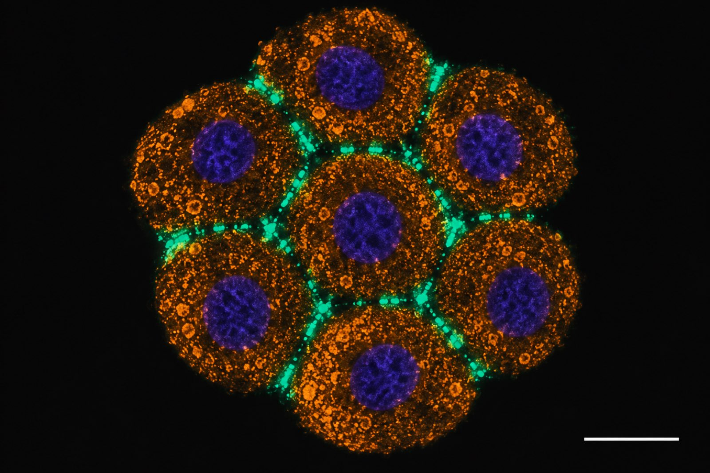

Islote conectado · las placas de conexina 36 en el borde entre células

Qué se ve
Los cúmulos verdes están exactamente en el límite entre dos células vecinas.
Qué es la conexina 36
Es una proteína que se inserta en la membrana. Seis conexinas forman un conexón, que es medio canal. El conexón de una célula se acopla con el de la célula de al lado, y entre los dos hacen un canal que atraviesa las dos membranas. Por ahí pasan iones y mensajeros de un citoplasma al otro, sin salir al exterior.
Muchos de esos canales juntos forman una placa: eso es cada cúmulo verde.
Representación en el estilo de la inmunofluorescencia confocal